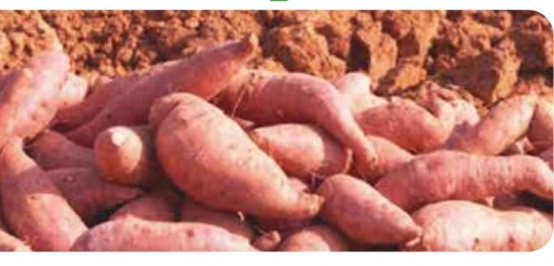
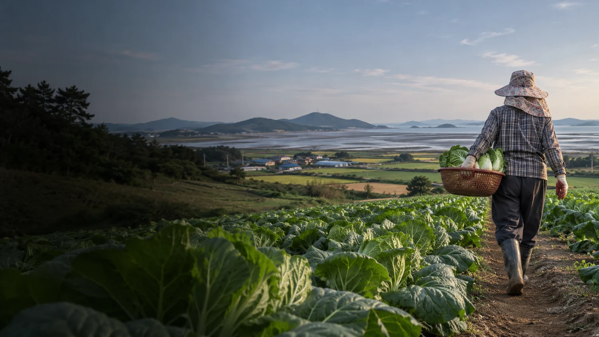

싹이 트는 곳마다 꽃이 핍니다.
트리플영농조합법인은 1995년 전남 무안에 설립되었습니다. 친환경 농산물의 생산부터 가공과 판매까지 맡고 있으며 무안군 학교급식에 친환경 식재료를 공급합니다.
대표 인사말
무안에서 기른 농산물을 학교급식과 가정의 식탁에 전합니다. 신선한 농산물부터 간편하게 즐기는 고구마 제품까지, 일상에 필요한 먹거리를 정성껏 준비하겠습니다.
대표 인사말은 예시 문구입니다.

회사 소개